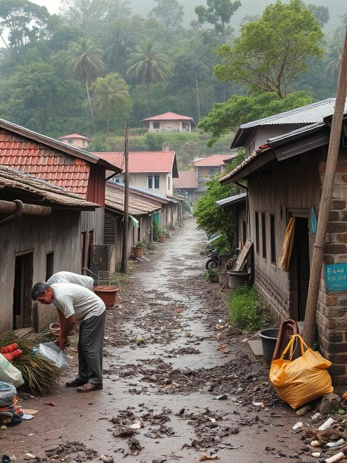
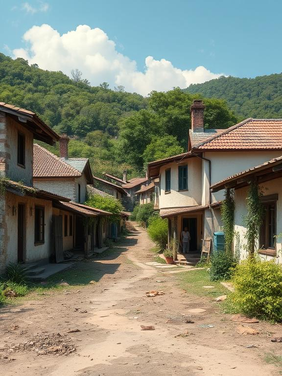

Before
After87%
Reduction in cholera
1,200
Hygiene kits distributed
15
Trained community leaders
Nkhotakota District, Malawi
Program Active: 2020-Present
Before the hygiene program, our children were constantly sick with diarrhea. Now, with the new water filters and handwashing stations at school, attendance has doubled and our community is healthier than ever.